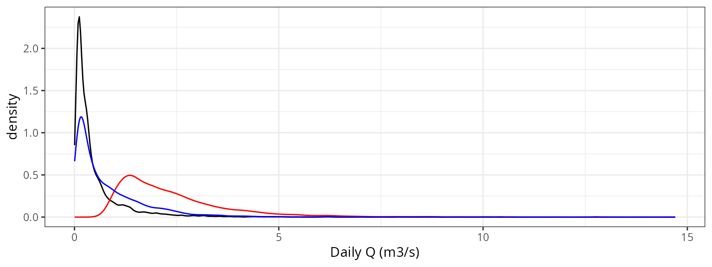

Evaluation of watershed-level runoff against river gauge data
Miquel De Cáceres / María González
2025-01-28
Source:vignettes/evaluation/WatershedLevelEvaluation.Rmd
WatershedLevelEvaluation.RmdIntroduction
Goal
The aim of this article is to provide an assessment of the
performance of spwb_land() for the prediction of watershed
outflow. To this aim, we simulate hydrological processes in a set of
benchmark watersheds and compare the model predictions of watershed
outflow against measurements obtained using river gauges at watershed
outlets.
Simulation procedure
For each watershed, the following procedure has been conducted:
- Initial warm-up simulation for a specified number of years
- Simulation for the period with observed data before calibrating watershed parameters
- Manual calibration of watershed parameters (to be replaced with automatized calibration)
- Final simulation for the period with observed data after calibrating watershed parameters.
Goodness-of-fit statistics
The following goodness of fit statistics are calculated using package
hydroGOF:
- Nash-Sutcliffe Efficiency (NSE): This coefficient is sensitive to extreme values and might yield sub-optimal results when the dataset contains large outliers.
- Kling–Gupta efficiency (KGE): Provides a decomposition of the Nash-Sutcliffe efficiency, which facilitates the analysis of the importance of different components (bias, correlation and variability).
- Index of agreement (d): Initially proposed by Willmott (1981) to overcome the drawbacks of the R2, such as the differences in observed and predicted means and variances (Legates and McCabe, 1999). d is also dimensionless and bounded between 0 and 1 and can be interpreted similarly to R2.
- Volumetric efficiency index (VE): Originally proposed by Criss and Winston (2008) to circumvent some of the NSE flaws. VE values are also bounded [0, 1] and represent the fraction of water delivered at the proper time.
- Root mean squared error (RMSE): The usual estimation of average model error (i.e. the square root of mean squared errors).
Watershed (TETIS) parameters
The following table contains the set of TETIS parameters employed in
spwb_land() simulations on all watersheds, before and after
calibration:
| medfateland | medfate | model | watershed | Calibration | R_localflow | R_interflow | R_baseflow | n_interflow | n_baseflow | num_daily_substeps | rock_max_infiltration | deep_aquifer_loss |
|---|---|---|---|---|---|---|---|---|---|---|---|---|
| 2.4.7 | 4.7.0 | tetis | aiguadora | before | 1 | 50 | 5 | 1.0 | 1.0 | 4 | 10 | 0 |
| 2.4.7 | 4.7.0 | tetis | aiguadora | after | 1 | 8 | 1 | 0.5 | 0.7 | 4 | 10 | 5 |
| 2.5.0 | 4.8.0 | tetis | aiguadora | before | 1 | 50 | 5 | 1.0 | 1.0 | 4 | 10 | 0 |
| 2.5.0 | 4.8.0 | tetis | aiguadora | after | 1 | 8 | 1 | 0.5 | 0.7 | 4 | 10 | 5 |
Evaluation results
AIGUADORA watershed with TETIS and version 2.4.7

Goodness-of-fit
| Scale | Calibration | NSE | KGE | d | VE | RMSE |
|---|---|---|---|---|---|---|
| Daily | Before | -8.095 | -1.811 | 0.568 | -3.074 | 2.310 |
| Daily | After | -0.174 | 0.334 | 0.435 | 0.006 | 0.830 |
| Monthly | Before | -17.724 | -3.194 | 0.613 | -3.017 | 2.191 |
| Monthly | After | -0.560 | 0.052 | 0.463 | 0.166 | 0.633 |
Hydrological analysis
Density distribution

Percentiles
| Observed | Uncalibrated | Calibrated | |
|---|---|---|---|
| 1% | 0.04 | 0.976 | 0.050 |
| 5% | 0.06 | 1.119 | 0.091 |
| 10% | 0.07 | 1.241 | 0.131 |
| 15% | 0.08 | 1.361 | 0.164 |
| 25% | 0.12 | 1.555 | 0.243 |
| 50% | 0.26 | 2.175 | 0.573 |
| 75% | 0.56 | 3.042 | 1.244 |
| 85% | 0.89 | 3.665 | 1.717 |
| 90% | 1.22 | 4.181 | 2.054 |
| 95% | 1.82 | 5.015 | 2.594 |
| 99% | 3.53 | 7.000 | 3.797 |
AIGUADORA watershed with TETIS and version 2.5.0

Goodness-of-fit
| Scale | Calibration | NSE | KGE | d | VE | RMSE |
|---|---|---|---|---|---|---|
| Daily | Before | -6.645 | -1.553 | 0.525 | -2.701 | 2.118 |
| Daily | After | 0.060 | 0.484 | 0.535 | 0.181 | 0.742 |
| Monthly | Before | -14.575 | -2.811 | 0.573 | -2.637 | 1.999 |
| Monthly | After | -0.062 | 0.326 | 0.587 | 0.359 | 0.522 |
Hydrological analysis
Density distribution

Percentiles
| Observed | Uncalibrated | Calibrated | |
|---|---|---|---|
| 1% | 0.04 | 0.861 | 0.021 |
| 5% | 0.06 | 0.994 | 0.057 |
| 10% | 0.07 | 1.109 | 0.088 |
| 15% | 0.08 | 1.223 | 0.114 |
| 25% | 0.12 | 1.398 | 0.174 |
| 50% | 0.26 | 1.975 | 0.444 |
| 75% | 0.56 | 2.833 | 1.068 |
| 85% | 0.89 | 3.420 | 1.487 |
| 90% | 1.22 | 3.923 | 1.819 |
| 95% | 1.82 | 4.669 | 2.315 |
| 99% | 3.53 | 6.525 | 3.488 |